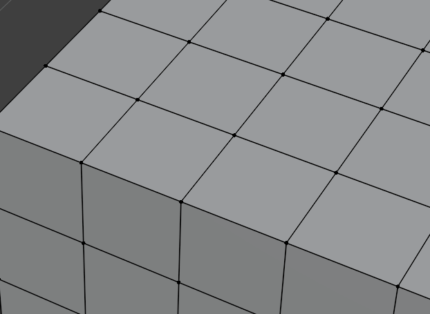
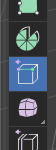
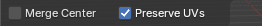
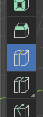
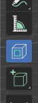
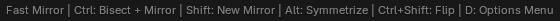
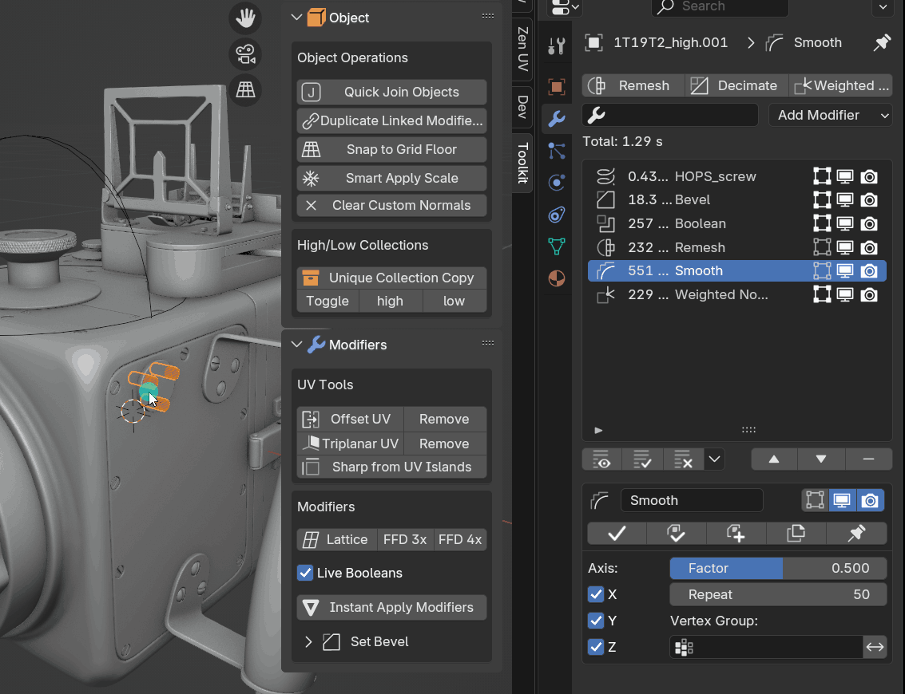
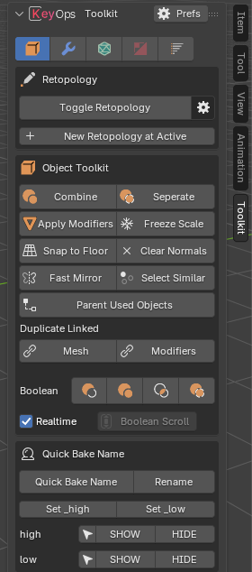
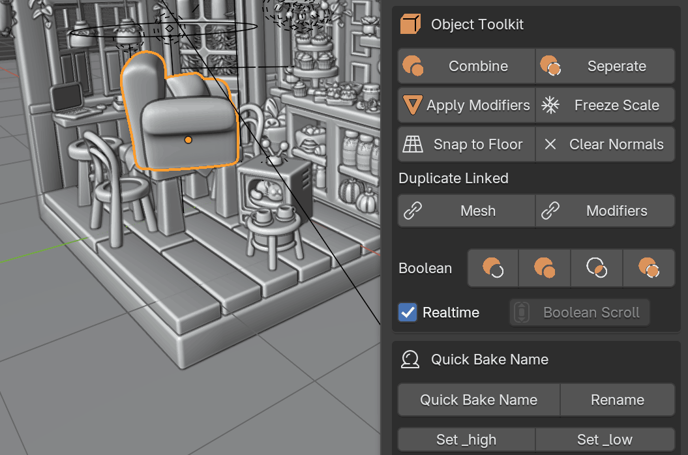
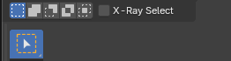

Modeling Tools
Fast, interactive modeling tools. While a tool runs, its keys are listed in the status bar.
Merge Tool
Drag a vertex or edge onto another to merge them.



More info
Toolbar · Edit Mode
| Input | Action |
|---|---|
| LMB drag | Drag from source to target |
| C | Toggle merge at center |
| RMB / Esc | Cancel |
Toggle in preferences: Merge Tool
Fast Loop Cut
Alt RHover to preview, click to cut. No slide step.

More info
Toolbar
| Input | Action |
|---|---|
| Scroll / + - | Number of cuts |
| E / hold Alt | Even |
| C / hold Shift | Center |
| F / hold Ctrl | Edge Flow |
Toggle in preferences: Fast Loop Cut
Cutter
Draw a shape to boolean-cut objects.

More info
Toolbar · Object Mode and Edit Mode
| Input | Action |
|---|---|
| LMB drag | Draw the shape, then move the mouse for depth |
| B C N | Box / Circle / Ngon |
| B on a box | Bevel the corners: move the mouse for the width, click to go on. B again removes it |
| Scroll or - + | Circle segments, or bevel segments |
| P | Bevel profile: move the mouse from concave to round to square, click to go on |
| X | Next operation: Difference / Union / Intersect / Slice / Add |
| 1 2 3 | Mirror X / Y / Z |
| R / Shift R | Array: one copy more / less |
| Enter, double click or click the first or last point | Close the ngon |
| Hold Shift | Square box, or ellipse circle |
| Hold Alt | Draw the box from the center (circles always are) |
| Hold Ctrl | Snap to a nearby vertex, otherwise to the grid (Snap increment). Shows before you click, so the cut starts on the snapped point. Works for the shape and the depth |
| L / A | Live preview / Apply |
| D | Settings |
Live is on by default and shows the boolean while you draw. Turn it off for heavy meshes.
With no mesh under the cursor the shape is drawn on the grid floor: it cuts the selected objects, or adds a new mesh when nothing is selected. A click without a drag selects the object under the cursor instead of drawing (n-gons start with a drag too).
With a selection, only the selected objects are cut. Select a cutter to cut the cutter. With nothing selected, the object under the cursor is cut. After a cut the cut objects stay selected.
A bevelled box stays editable: the cutter is a plain box with a Bevel modifier. When the bevels meet (full width), a Weld modifier in Connected mode is added, already in the live preview.
Mirror copies the cutter across the axes of the object the cut starts on and bisects it at the mirror plane, so a cutter that crosses the plane never overlaps its copy (overlapping cutters make booleans fail).
Array repeats the shape in a row along its own width (or height: Array Direction in the D settings and the redo panel), spaced by its size plus the Gap. The cutter gets an Array modifier, before the Mirror modifier, so arrayed copies are mirrored too; in Edit Mode every copy is built into the mesh or cut.
The solver switches to Manifold when the object is a closed mesh, and back to Fast when it isn't. Exact stays as you set it.
In Edit Mode the cut is applied to the mesh right away, and Add builds the shape into the mesh.
You can orbit the view while setting the depth. A cut only goes into the surface. Add can come out of it or go into it.
Toggle in preferences: Cutter
Fast Mirror
Alt XClick a block to mirror on that axis.
More info

| Click | Mode |
|---|---|
| LMB | Mirror modifier with clipping |
| Ctrl LMB | Bisect + Mirror |
| Shift LMB | New Mirror modifier |
| Alt LMB | Symmetrize |
| Ctrl Shift LMB | Flip |
| D | Options menu |
Toggle in preferences: Object Toolkit
Fast Bevel
Drag for width, scroll for segments.
More info
Add Modifier Pie
Ctrl-click adds a new bevel limited to 30°, Ctrl Shift-click 60°. In Edit Mode a new bevel only affects the selected edges. Tab opens settings, Shift Enter applies.
1 / 2 / 3: hard normals bevel (1 segment with Harden Normals; a flat-shaded mesh is shaded smooth by angle so it shows), vertex bevel, conversion bevel (profile 1, 2 segments). Scroll changes the segments. Typing a value starts with the numpad or a period.
A new bevel goes above Triangulate, Weighted Normal and Smooth by Angle, and never past a modifier pinned to the end, so shading stays right.
Fast Array
Drag for offset, scroll for count.
More info
Add Modifier Pie
X Y Z axis, R / C relative or constant, V to end the array at the mouse cursor (press again to go back to dragging), 1 lines the copies up end to end (each starts where the last one ends), Shift 1 / 2 / 3 for up to three arrays.
Fast Solidify
Drag for thickness.
More info
Add Modifier Pie
1 2 3 offset, 4 simple / complex, R rim only, A add new, Tab options.
Booleans
Ctrl NumpadSelect cutters, then the target, then press a shortcut.


More info
Object Mode
| Shortcut | Operation |
|---|---|
| Ctrl Numpad - | Difference |
| Ctrl Numpad + | Union |
| Ctrl Numpad * | Intersect |
| Ctrl Numpad / | Slice |
Realtime off hides booleans while you move objects. Use Parent Used Objects so cutters follow the target.
Snap to Floor
Alt 3Drops the selection onto the grid floor.

More info
Object Mode
Alt-click the button in the Toolkit panel to snap each object on its own.
Turn on Snap to Surface in the redo panel to drop onto the nearest mesh face below instead of the grid floor (off by default). With nothing below, it falls back to the grid floor.
Toggle in preferences: Object Toolkit
Select Similar
Select everything similar to the active mesh or element.
More info
Object & Edit Mode
In the Toolkit panel, the Object Mode Select menu and Edit Mode Select › Select Similar.
Thin Triangles in Shift G shows when the active face is a selected triangle. It selects triangles whose sharpest corner is Equal, Greater or Less than the active one's, within a threshold.
The Edit Toolkit's Thin Triangles button selects all sliver triangles under a max angle (default 10°). Both switch to face select.
Push / Pull
Drag faces out or in: square walls stretch, otherwise it extrudes and merges or cuts.
More info
Push / Pull: Toolbar (Edit Mode) · Smart Extrude: Extrude menu (Alt E)
Push / Pull works like push / pull in CAD. Smart Extrude is its own tool on the same engine: a drag that always extrudes (never just slides the faces), then adds or cuts.
The tool works on the face under the mouse, or on your selection when you click on a selected face; it never selects anything for you. Shift-click takes the whole flat area around the face; drag it.
| Input | Action |
|---|---|
| Drag | Distance |
| Ctrl | Snap to the height of other vertices |
| Shift | Precise |
| P | Push / Pull on or off (off: always extrude) |
| Type a number | Exact distance |
When the extrusion runs into nothing else it is a plain extrude, no boolean at all. When it does, only the parts of the mesh it can reach take part; open holes are closed for the moment and opened again afterwards, so an open mesh stays open and only changes where it was cut. Blender 4.5+ uses Manifold, 4.2 uses Fast; every result is checked and the tool falls back (down to Exact) when a solver gets it wrong. Nothing is left behind afterwards: no modifier, no cutter object.
Toggle in preferences: Push / Pull
Slide Scale
Scale or rotate with every vertex sliding along its edges.
More info
Edit Toolkit › Transform · Q Menu › Mesh
Each selected vertex slides along the edge that points the way it would move, so the surface around the selection keeps its shape: a ring on a sphere scales along the sphere, a diagonal line across a cylinder stays on the cylinder. A vertex on the selection's border with no edge going its way stays put (moving freely would leave the surface); vertices inside a selected area move freely. Slide Rotate (or R while scaling) turns the selection the same way, with every vertex following the existing edges. X Y Z for an axis (rotate: around the view by default), C toggles Clamp (stop at the next vertex), type a number for an exact factor or angle.
Make Edge Trim
Turn edges into trim strips with trim-sheet UVs, or a live trim that follows the mesh.
More info
Make Edge Trim: Edit Toolkit · Q Menu › Mesh. Live Edge Trim: Toolkit › Modifiers (Edit Mode)
Make Edge Trim: the default Mixed profile lays each flange on the face beside the edge at whatever angle the faces meet, so a trim on a slope or an n-gon never cuts into it; border edges get one flange standing up. Widths, the gap and UVs per metre are metres in the scene, whatever the object's scale. A line across a flat surface (faces in one plane, like a loop around a cylinder's side) gets a flat trim on both sides, like a decal. Keep Aspect UVs don't stretch along the trim. With Smooth Shading the trim has no sharp edges and no custom normals.
Live Edge Trim: a new object whose Geometry Nodes modifier sweeps the trim along the selected edges and updates whenever the mesh changes or moves. With Wrap each flange lies on the face beside the edge at whatever angle the faces meet (slopes, bevels, concave corners); a border edge gets one flange standing up. One Width by default (Separate Widths gives the second flange its own); the trim gets the source's material. Offset, flips and trim sheet UVs (V range, UVs per metre, offset, rotation) stay editable in its modifier. In Blender 4.3 and newer, arrows in the viewport drag the two widths and the offset.
Re-Bevel
Change a bevel that's already in the mesh: wheel for segments, W for width, P for profile.
More info
Edit Toolkit › Rings & Sides
Select the bevel's faces (or an edge ring across it). Re-Bevel starts from the bevel as it is: its own segments and width. It folds the bevel back into the sharp corner it came from, exactly (running it again and again moves nothing), and bevels it again. Follow Loops (on by default, F) takes the whole bevel along its length, off only the selected part. Only the new bevel's faces stay selected.
| Input | Action |
|---|---|
| Wheel / + - | Segments (0 removes the bevel) |
| W | Width with the mouse; click (or W) to go back |
| P | Profile with the mouse; click (or P) to go back |
| Type a number | Segments, or the width / profile while changing them |
| F | Follow Loops on / off |
| LMB / Enter | Confirm |
| RMB / Esc | Cancel (in width / profile: back, keeping the old value) |
A width of 0 also removes the bevel.
X-Ray Select
Always select through the mesh.

More info
Edit Mode
X-ray only turns on while you drag, so the mesh stays solid.
Select Box, Circle and Lasso each have their own checkbox in the tool header.